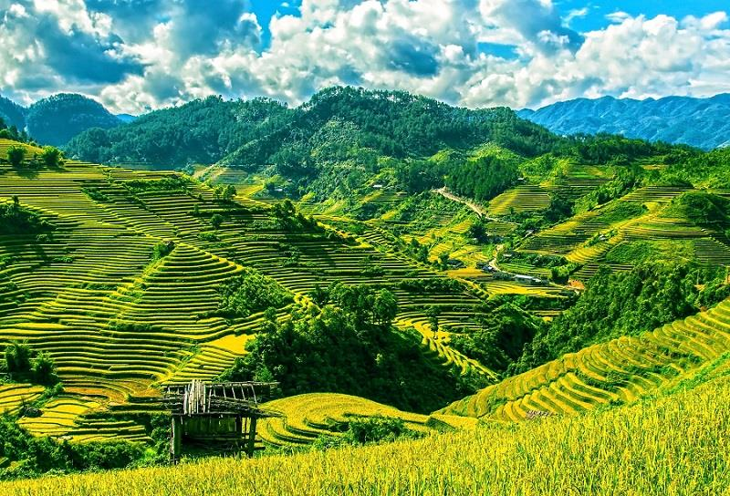
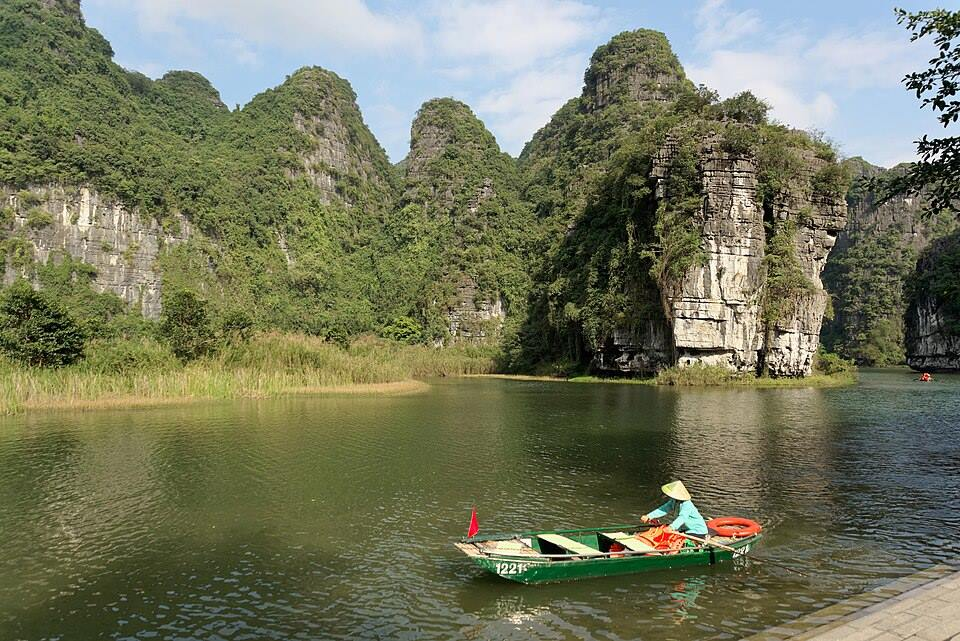
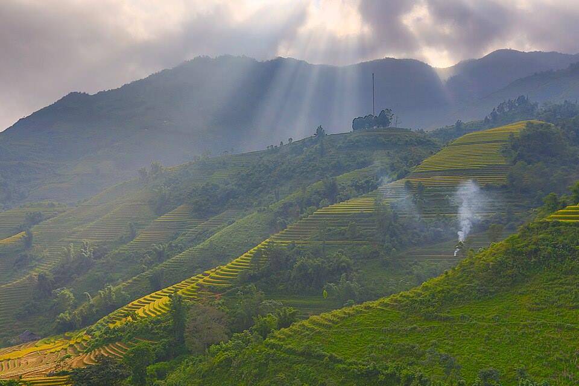
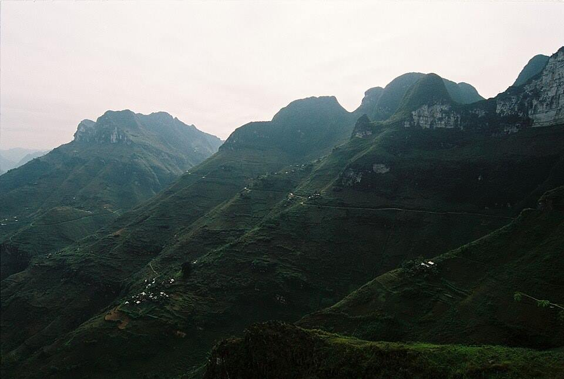
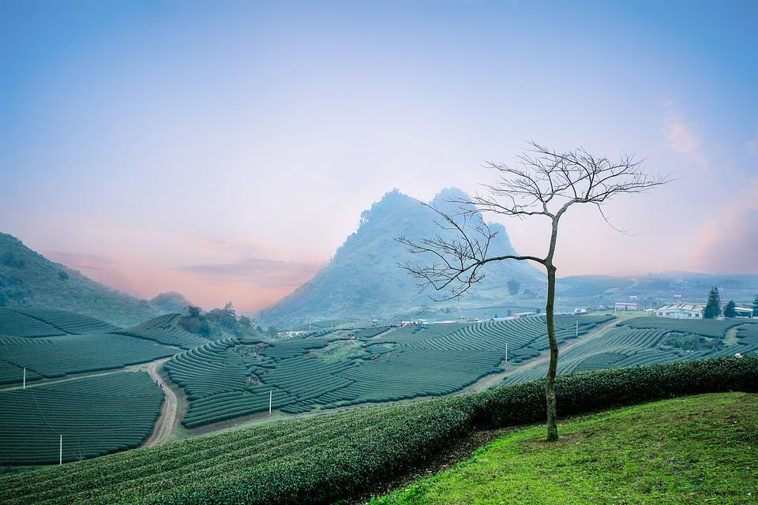

Ha Long Bay – Quang Ninh
Ha Long Bay is famous for its limestone mountains, beautiful islands, cruises, and caves.
Northern Vietnam is known for its beautiful mountains, rice terraces, limestone landscapes, and rich cultural heritage. The region offers a variety of natural landscapes and cultural experiences.

Ha Long Bay is famous for its limestone mountains, beautiful islands, cruises, and caves.

Ninh Binh is known for Trang An, Tam Coc, Mua Cave, and Bai Dinh Pagoda. Its mountains, rivers, and natural scenery make it a popular destination.

Sa Pa is known for its beautiful terraced rice fields, Fansipan Mountain, and Cat Cat Village.

Ha Giang offers dramatic mountain landscapes, Ma Pi Leng Pass, the Nho Que River, and the Dong Van Karst Plateau.

Moc Chau is known for its green tea hills, seasonal flowers, and beautiful mountain landscapes.